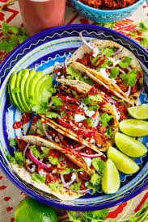

Taco Recipe

Description:
Dive into the vibrant flavors of Mexican cuisine with these delicious tacos filled with seasoned meat, fresh vegetables, and zesty toppings.
Ingredients:
- Soft or hard taco shells
- Ground beef or turkey
- Taco seasoning mix
- Chopped lettuce
- Diced tomatoes
- Grated cheese (such as cheddar or Monterey Jack)
- Diced onions
- Diced avocado or guacamole
- Sour cream
- Salsa
- Cilantro (optional)
- Lime wedges (optional)
Steps:
- Heat a skillet over medium-high heat and cook the ground beef or turkey until browned, breaking it into crumbles with a spoon.
- Add taco seasoning mix and water according to the package instructions. Stir well and simmer for a few minutes until the meat is fully coated and cooked through.
- Warm the taco shells in the oven or on a skillet according to package instructions.
- Assemble the tacos by filling each shell with a spoonful of seasoned meat.
- Top the meat with chopped lettuce, diced tomatoes, grated cheese, diced onions, diced avocado or guacamole, sour cream, salsa, and any other desired toppings.
- Garnish with fresh cilantro and serve with lime wedges on the side, if desired.
- Serve immediately and enjoy your delicious homemade tacos!